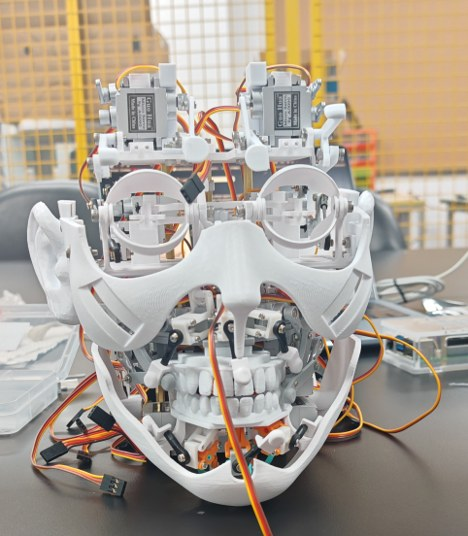

XJTLU · Oct 2025–present · Undergraduate research
Biomimetic facial robot
Bringing an expressive robotic face from mechanical assembly to programmable, coordinated motion.

My contributions
Mechanical adaptation
Refined cheek linkages and the jaw-opening mechanism, adjusted CAD models for facial-skin moulds, and supported assembly and fit checks.
Communication & motion
Implemented actuator communication and per-actuator position commands, then coordinated multiple actuators into facial-expression poses and motion sequences.
Developed with the project team on an adapted open-source platform. Current work centres on mechanical refinement, skin integration and expression control.
Platform & availability
The hardware platform builds on Morpheus. The original platform design is credited to its authors; the adaptation and integration above describe my role.
This is a project overview with a hardware photograph. Project-specific source code and design files remain private.